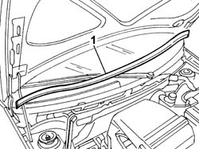

7025A64 Engine compartment SEAL - R.R.
- Path
- Procedures > 70 FITTINGS > 7025 COMPARTMENT LIDS > 7025A bonnet lid > 7025A64 Engine compartment SEAL - R.R.
- Kind
- repair procedure (removal / refitting; the operation number is the code)
- Applies to
- all engines; all production periods
- Interactive page
- https://sloeber94.github.io/elrnDB-fPnd/en/#/2753141
Applies to: all engines; all production periods
 Removing
Removing
 Refitting
Refitting1. Release the engine compartment seal and remove it.

Applies to: all engines; all production periods
Refitting
RemovingPlace the engine compartment seal in position.